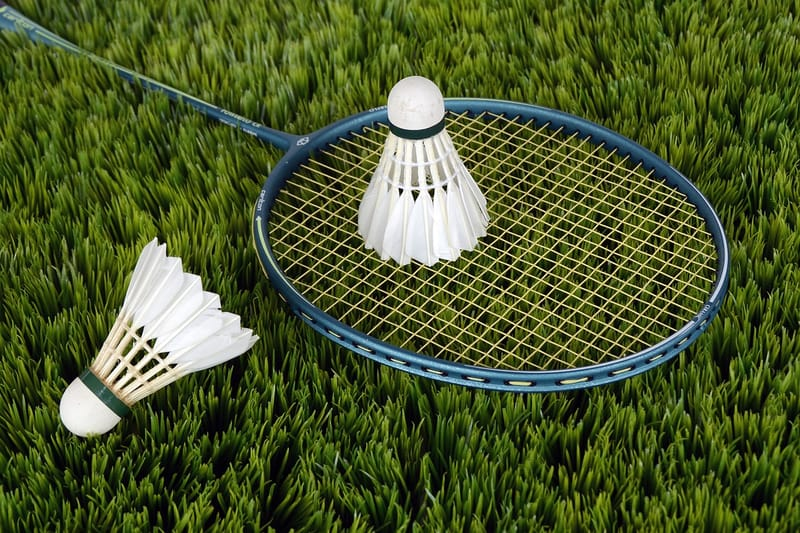
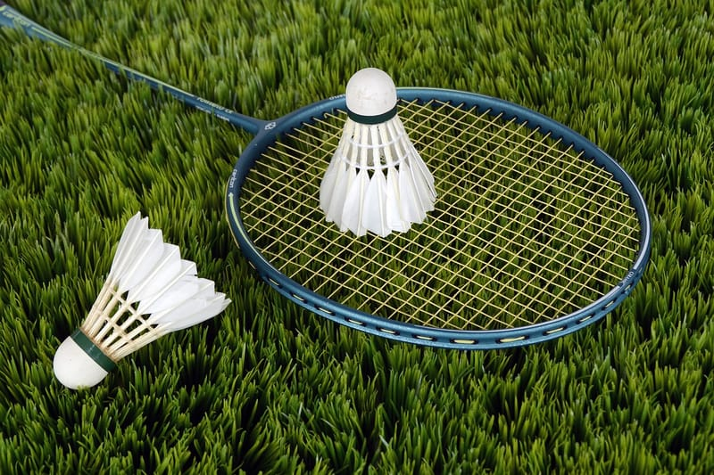
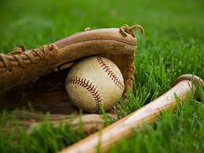
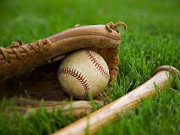

Sport is a form of physical activity or game. Often competitive and organized, sports use, maintain, or improve physical ability and skills. They also provide enjoyment to participants and, in some cases, entertainment to spectators. Many sports exist, with different participant numbers, some are done by a single person with others being done by hundreds. Most sports take place either in teams or competing as individuals. Some sports allow a "tie" or "draw", in which there is no single winner; others provide tie-breaking methods to ensure one winner. A number of contests may be arranged in a tournament format, producing a champion. Many sports leagues make an annual champion by arranging games in a regular sports season, followed in some cases by playoffs.
Sport is generally recognised as system of activities based in physical athleticism or physical dexterity, with major competitions admitting only sports meeting this definition.[3] Some organisations, such as the Council of Europe, preclude activities without any physical element from classification as sports. However, a number of competitive, but non-physical, activities claim recognition as mind sports. The International Olympic Committee who oversee the Olympic Games recognises both chess and bridge as sports. SportAccord, the international sports federation association, recognises five non-physical sports: chess, bridge, draughts, Go and xiangqi. However, they limit the number of mind games which can be admitted as sports. Sport is usually governed by a set of rules or customs, which serve to ensure fair competition. Winning can be determined by physical events such as scoring goals or crossing a line first. It can also be determined by judges who are scoring elements of the sporting performance, including objective or subjective measures such as technical performance or artistic impression.

 


 
